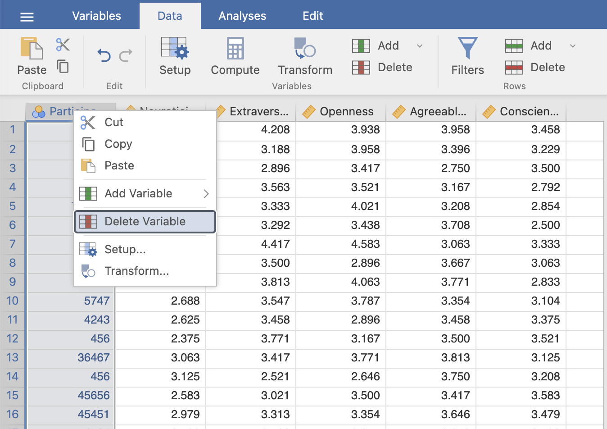
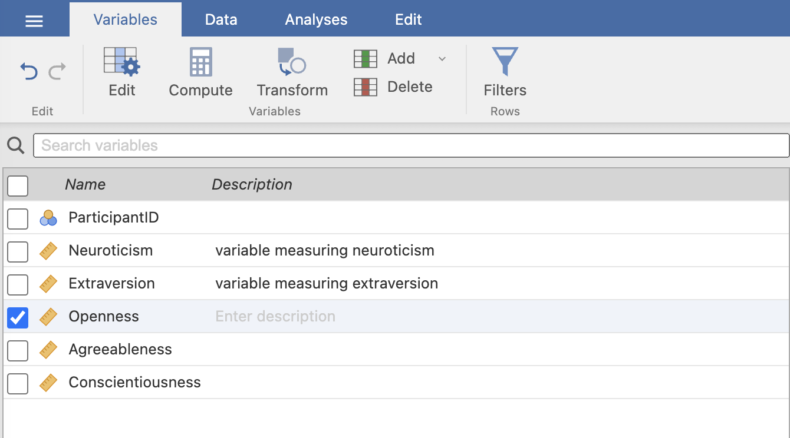

## simulate a dataset with a Likert scale with 5 questions
set.seed(2024) #set a seed to keep the simulated numbers reproducible
data <- data.frame(ParticipantID = sample(1:1000, 20, replace = FALSE),
questionOne = round(rnorm(20, mean = 3, sd = 1), digits = 0),
questionTwo = round(rnorm(20, mean = 3, sd = 1), digits = 0),
questionThree = round(rnorm(20, mean = 3, sd = 1), digits = 0),
questionFour = round(rnorm(20, mean = 3, sd = 1), digits = 0),
questionFive = round(rnorm(20, mean = 3, sd = 1), digits = 0)
)Why should you share your data? Because sharing is caring. It is 2024, we are in an environmental crisis, and collecting data and keeping it to yourself should be a crime against humanity. Now that you’re guilted into it, it is only fair I help you change.
Most common excuse for keeping data private is privacy concerns, which is a legitimate reason and a problem that is yet to be fully solved. This post offers some tips on how to share data in a safer way.
Sharing data today is becoming a beneficial act to the data curators (i.e., you who are creating and maintaining the datasets) as well, not only to everyone else who can reuse that data, because properly sharing datasets allows others to cite your work. Properly collected, curated and shared data is becoming as valuable as publishing journal articles (maybe I’m exaggerating, but this is certainly how things should be!).
Let’s start with defining open data, so there can’t be any arguments on semantics. I will refer to the FAIR principles, although I would argue that “open data” means different things to different entities. FAIR stands for Findable, Accessible, Interoperable and Reusable data.
I would try to translate their principles as open (i.e., FAIR) data being: a unique file, containing only variables and values (regardless of the file type, e.g., .txt, .json, etc.) that can be used as is, or wrangled with available analytical tools. Notice that with the current development of LLMs, this will start encompassing a much larger number of file types.
For example, you can probably take a poorly described dataset, formatted in a complicated, nested table, and saved as a PDF, import it to chatGPT and it will export a usable Excel sheet with that data. I would argue this does not qualify that PDF as FAIR data, and I would for these purposes equate AI power to manual labor, and if that is necessary, your (open) data is not FAIR.
There are millions of nuances here probably, and most outliers will probably be pointless to cover because it is safe to assume most data in social sciences is simply tabular. I will only focus on that type of data in this post, and might do a separate post for neuro/image-based data, although the basic principles stay the same.
We will go through each step using a simulated dataset. Wherever possible, steps will be shown in R, Python, and Jamovi as a GUI alternative. You can of course use SPSS, MATLAB or other proprietary softwares, but if you don’t plan to use open source alternatives, you’re on your own.
import random
import numpy as np
import pandas as pd
random.seed(2024) # set a seed for reproducibility
# sample random values for each column into individual lists
# decide on the mean and sd of the distribution
mu = 3
sigma = 1
# create a dictionary with columns
data = {'ParticipantID': random.sample(range(1,1000), 20),
'questionOne': np.random.normal(mu, sigma, 20).round(),
'questionTwo': np.random.normal(mu, sigma, 20).round(),
'questionThree': np.random.normal(mu, sigma, 20).round(),
'questionFour': np.random.normal(mu, sigma, 20).round(),
'questionFive': np.random.normal(mu, sigma, 20).round()}
# turn into a dataframe format
data = pd.DataFrame(data = data)1 First it’s raw
Whether you conduct an online survey, experiment on a local machine, pencil-paper, video-recording, etc., you will wind up with raw data in some form. Some sources define raw data as “collected from the source”. It is hard to say whether we have multiple raw data stages, and when it becomes processed.
Presumably, raw data would only be data that is in the source format, i.e., a video-recording, html file downloaded from SurveyMonkey, filled out paper survey, etc., which would make a tabular form of the variables collected with various sources processed to some degree. For the purposes of this blog, raw data will be considered the first iteration of the tabular form. For example, if you collected your data through a paper survey, we would consider raw data to be an Excel file containing answers from all participants that someone transferred from paper to Excel.
Note that Excel is also a proprietary software, and saving your data should be done in open source formats (e.g., files with extension like .csv, .txt, .tsv), which can be opened without paying for a software licence. However, R and Python can read Excel files even if you don’t have access to Microsoft Excel. Still, it is good practice to save your data in a machine-readable, open format. Some will argue however, that saving Excel files as a .csv file might lead to data loss and errors. Unless you have done some kind of preprocessing in Excel, this should not be overly concerning, but for safety, keep an Excel copy saved as well.
Raw data will most likely contain identifiers, and should rarely be openly deposited due to possible ethical and privacy violations.
1.0.1 Anonymize the dataset by removing identifiying columns
## import data and drop id column in base r
# import raw data (make sure to set your directory
# where your data is located)
base_data <- read.csv("data.csv")
# create a new object for additional wrangling
anon_base_data <- base_data |>
subset(select = -ParticipantID)
## tidyverse version
library(tidyverse)
# import raw data
tidyv_data <- read_csv("data.csv")
# create a new object for additional wrangling
anon_tidyv_data <- tidyv_data %>% select(-ParticipantID)
# save the dataset as a csv file
# write_csv tidyverse alternative
write.csv(anon_base_data, "data.csv") import pandas as pd
raw_data = pd.read_csv("data.csv")
# drop identifying columns(s)
new_data = raw_data.drop(columns = ['ParticipantID'])
# save the dataset as a csv file
new_data.to_csv("data.csv")
1.0.2 Anonymize data by creating synthetic equivalents
Sensitive data, particularly when it pertains to populations with low incidence disabilities may still be identifiable, even when we drop demographic information or identifying descriptors. To be able to share the code and make it reproducible, one way to share the data is to create synthetic datasets based on the properties of the original one.
I will show one example in R and Python, with the synthpop R package, and the sdv Python package, but there are multiple packages that could fit your needs in both languages. These packages allow you to recreate your dataset and keep original properties (i.e., type of data for each variable) and relations between them (e.g., mean or correlation values) as much as possible.
Synthetic data fidelity depends on the size and quality of the original data, but it can at least serve as a dataset that allows reproducing the code you used to conduct analyses. Each package (library) also provides functions that help you estimate how well the synthetic data corresponds to the original.
library(synthpop)
syn_data <- syn(anon_base_data,
method = "parametric",
seed = 123)
# compare the similarity between the synthetic and original data
compare(syn_data$syn, anon_base_data) import sdv
from sdv.metadata import SingleTableMetadata
from sdv.single_table import GaussianCopulaSynthesizer
from sdv.evaluation.single_table import run_diagnostic, evaluate_quality
from sdv.evaluation.single_table import get_column_plot
import random
random.seed(2024)
# create the metadata of the dataset
metadata = SingleTableMetadata()
metadata.detect_from_dataframe(new_data)
# select the type of sampling
synthesizer = GaussianCopulaSynthesizer(metadata)
# create the synthetic data
synthesizer.fit(new_data)
synthetic_data = synthesizer.sample(num_rows=20)
# compare the similarity between the synthetic and original data
# basic validity checks
validity = run_diagnostic(new_data, synthetic_data, metadata)
# statistical similarity
similarity = evaluate_quality(new_data, synthetic_data, metadata)Synthetic datasets have been getting attention for some time now in healthcare research, so you can read up more about them here and here, and disability research (and social sciences generally) can absolutely benefit from them as well.
2 Prepare metadata/codebook
FAIR data reuqires you to provide “data about your data” (i.e., metadata) which allows users to understand what the dataset contains in terms of measured variables, name meaning, permitted and forbidden values, etc.
For example, you might have a dataset containing a hundred variables you collected from a large battery of cognitive tests. Providing that dataset to others is close to useless if the users do not know what each variable was measuring, what was the possible range of values for each variable and what was the intended data type (e.g., integer).
Once again, there is no clear consensus on naming and defining metadata, so I will use it interchangeably with codebook here, as some fields call files containing that information “codebooks”. Section 4 at the end provides links to guides that can help you create good metadata files.
Once your data is deidentified, you can proceed to clean it and wrangle however you need it for your analyses. Once you have both the deidentified raw data and the clean (final) dataset, you can prepare for sharing those files.
To provide FAIR data, you now have the data saved as a .csv file. Great! Now we need a codebook and quality metadata for the dataset. A codebook is a file accompanying the dataset which explains each variable, e.g., data type, range of values, names, descriptions, etc. You can write this by yourself, but R provides a package that creates a detailed codebook for you. codebook allows you to also create metadata for your datasets.
library(codebook)
# create a codebook markdown
# this codebook also provides metadata
codebook(anon_base_data)
# assign attributes to the data manually
metadata(anon_base_data$questionOne <- "First question in the scale",
anon_base_data$questionTwo <- "Second question in the scale")
4 Resources
There is plenty more that goes into creating robust datasets which can easily be expanded and built upon. For ideas and guides on how to create flawless datasets, here are some resources:
- Psych-DS - a community-created set of standards for datasets in psychology research (which is heavily applicable to the rest of social sciences)
- Journal of Open Psychology Data - a journal that “publishes peer-reviewed data papers describing psychology datasets with high reuse potential” which can serve as inspiration for creating high quality datasets (thanks to Marta Topor for the suggestion!)
- BIDS - provides standards for creating metadata files for brain imaging data
- Making data FAIR - detailed guides on how to make your data FAIR